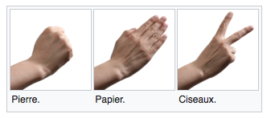

Jeu : pierre-papier-ciseaux¶
Le jeu pierre-papier-ciseaux (rock-paper-scissors) se joue avec les mains.

Description¶
Les deux joueurs choisissent simultanémant un des trois coups possibles:

pierre bat ciseaux
papier bat pierre
ciseaux bat papier
Ce jeu est aussi connu sous le nom de chifoumi.
Vous trouvez plus d’info sur Wikipédia.
Exemple online¶
Allez sur le site chifoumi.io pour avoir une idée du jeu.
Vous (you) allez jouer contre l’ordinateur (bot).
Votre projet¶
Ceci est un exemple d’un jeu vidéo, ou un humain joue contre l’ordinateur.
vous continuez jusqu’à une condition de fin
vous vérifiez si le choix est permis
vous affichez les coups
vous décidez qui gagne
vous tenez compte du score
Ce jeux est simple, mais il vous permet de comprendre comment un jeux vidéo fonctionne.
Représentation des coups¶
A chaque tour il y a 3 coups possibles. Il a différentes manières de représenter ces 3 options. Une façon est d’utiliser des chaînes de caracters.
coups = ['pierre', 'papier', 'ciseaux']
Une autre façon plus efficace est d’utiliser juste des entiers (0, 1, 2).
En commençant par 0, nous pouvons utiliser ces entiers comme indexe pour une liste avec les noms des coups.
0 = pierre
1 = papier
2 = ciseaux
coups = [0, 1, 2]
Bien sur, vous pouvez aussi utiliser des émoji pour rendre l’apparence plus cool.
coups = ['📜', '💎', '✂️']
Input-output¶
Pour ce jeu simple, vous utilisez la fonction input() pour demander le choix de l’utilisateur. Vous utilisez la fonction print() pour communiquer avec lui.
Le principe de base est:
x = input('votre choix: ')
print('vous avez choisi', x)
votre choix: pierre
vous avez choisi pierre
Boucle de jeu¶
Pour jouer ce jeu, vous utilisez la boucle while pour répéter les échanges.
Une condition de fin sera nécessaire.
Une manière fréquemment utilisée pour terminer un jeu est d’appuyer tout simplement sur la touche retour.
Dans ce cas input() retourne une chaine vide.
x = ''
La chaine vide est interprétée comme valeur booléenne False.
Essayez différentes valeurs.
bool('')
False
bool('pierre')
True
Donc voici une boucle de jeu. Elle continue jusqu’à ce que vous appuyer sur retour tout seul.
x = input('votre choix:')
while x:
x = input('votre choix:')
print('game over')
votre choix: papier
votre choix:
game over
Vérification¶
Un jeu vérifie si les entrées sont permis. Donc établissons d’abord une liste des coups qui sont permis.
coups = ['pierre', 'papier', 'ciseaux']
L’opérateur in permet de questionner si un élément fait partie d’une liste. Par exemple.
'papier' in coups
True
'ciso' in coups
False
Nous pouvons maintentant ajouter la vérification.
coups = ['pierre', 'papier', 'ciseaux']
print('choissisez entre:', *coups)
x = input('votre choix:')
while x :
if x in coups:
print('ok')
else:
print(x, "n'est pas dans", coups)
x = input('votre choix')
print('game over')
choissisez entre: pierre papier ciseaux
votre choix: pierre
ok
votre choix ciso
ciso n'est pas dans ['pierre', 'papier', 'ciseaux']
votre choix
game over
Choisir avec des raccourcis¶
Pour jouer facilement, il est préférable d’entrer une seule lettre, que de taper un mot entier.
coups = ['1', '2', '3']
print('choissisez entre:', *coups)
x = input('votre choix:')
while x :
if x in coups:
print('ok')
else:
print(x, "n'est pas dans", *coups)
x = input('votre choix:')
print('GAME OVER')
choissisez entre: 1 2 3
votre choix: 1
ok
votre choix: 4
4 n'est pas dans 1 2 3
votre choix:
GAME OVER
On aurait aussi pu choisir les lettres:
f= feuillep= pierrec= ciseaux
coups = ['f', 'p', 'c']
'p' in coups
True
Transformer le choix¶
Dans le jeux, il est avantageux de transformer les indices (0, 1, 2) en mots.
coups = ['pierre', 'papier', 'ciseaux']
emoji = '💎📜✂️'
print('0=pierre, 1=papier, 2=ciseaux')
x = input('votre choix:')
while x :
x = int(x)
print(emoji[x], coups[x])
x = input('votre choix:')
print('G A M E O V E R')
0=pierre, 1=papier, 2=ciseaux
votre choix: 0
💠pierre
votre choix: 1
📜 papier
votre choix:
G A M E O V E R
Choix aléatoire¶
Le module random permet de choisir des éléments aléatoires.
import random
La fonction random.randint(0, 2) retourne un entier aléatoire dans l’intervalle [0, 2].
coups = ['📜', '💎', '✂️']
for i in range(5):
x = random.randint(0, 2)
print(x, '=', coups[x])
1 = 💎
1 = 💎
2 = ✂️
2 = ✂️
0 = 📜
coups = ['pierre', 'papier', 'ciseaux']
for i in range(5):
x = random.choice(coups)
print(x)
ciseaux
papier
ciseaux
pierre
ciseaux
Jouer contre l’ordinateur¶
Dans ce jeux vous (you) allez jouer contre l’ordinateur (bot). L’ordinateur choisit une des 3 possibilités de façon aléatoire.
coups = ['pierre', 'papier', 'ciseaux']
print('0=pierre, 1=papier, 2=ciseaux')
x = input('votre choix:')
while x :
x = int(x)
bot = random.randint(0, 2)
print(coups[x], 'contre' ,coups[bot])
x = input('votre choix:')
print('game over')
0=pierre, 1=papier, 2=ciseaux
votre choix: 0
pierre contre papier
votre choix: 2
ciseaux contre papier
votre choix:
game over
Qui gagne ?¶
Si les deux coups sont les même, c’est un match nul, c’est facile à détécter.
x = 0
bot = 0
if x == bot:
print('match nul')
match nul
Si les deux coups sont différents, c’est plus compliqué
pierre (0) est plus fort que ciseaux (2)
papier (1) est plus fort que pierre (0)
ciseaux (2) est plus fort que papier (1)
Testez avec différents combinaisons
x = 1
bot = 2
if x == bot :
print('match nul')
elif x == 0 and bot == 2:
print('humain gagne')
elif x == 1 and bot == 0:
print('humain gagne')
elif x == 2 and bot == 1:
print('humain gagne')
else:
print('ordi gagne')
ordi gagne
Garder un score¶
Utilisez des variables pour garder un score. Au début il faut les initialiser.
humain = 0
ordi = 0
Pendant le jeu vous allez incrémenter le score si l’un ou l’autre gagne.
humain += 1
ordi += 1
humain += 1
print('score =', humain, ':', ordi)
score = 2 : 1
Projet¶
Combinez toutes les éléments pour créer un jeux vidéo où
vous jouez contre l’ordinateur
vous continuez jusqu’à une condition de fin
vous vérifiez si le choix est permis
vous affichez les coups
vous décidez qui gagne
vous tenez compte du score